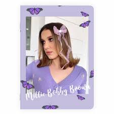

Millie Bobby Brown (ur. 19 lutego 2004 w Marbelli) – brytyjska aktorka i modelka. Grała m.in. w serialu Stranger Things, a także filmach Enola Holmes, Godzilla II: Król potworów i ich kontynuacjach.
Urodziła się w mieście Marbella w Hiszpanii jako trzecie z czworga dzieci Kelly i Roberta Brownów[1]. Wychowywała się z bratem Charleyem oraz dwiema siostrami – Paige i Avą[2][3]. Jej ojciec jest pośrednikiem w obrocie nieruchomościami[4]. Rodzina przeprowadziła się do Bournemouth w Wielkiej Brytanii, kiedy Millie miała cztery lata. Cztery lata później przeprowadzili się do Orlando w Stanach Zjednoczonych
W 2013 zadebiutowała na małym ekranie w roli młodej Alicji w serialu fantasy produkcji ABC, pt. Once Upon a Time in Wonderland, będącym spin-offem serialu Dawno, dawno temu. Rok później dostała swoją pierwszą główną rolę jako Madison O’Donnell w serialu stacji BBC America pt. Intruders (2014). Wystąpiła gościnnie w serialach, w tym w jednym z odcinków serialu kryminalnego produkcji CBS Agenci NCIS (2014), serialu komediowym ABC Współczesna rodzina (2015) i serialu medycznym ABC Chirurdzy (2015).
W wieku dwunastu lat zyskała międzynarodową popularność dzięki roli Jane „Jedenastki” Ives w pierwszym sezonie serialu grozy Netfliksa Stranger Things, za którą otrzymała nagrodę Saturna za najlepszy występ młodej aktorki w serialu telewizyjnym i MTV Movie Award jako najlepsza aktorka w serialu. Po raz pierwszy wystąpiła na kinowym ekranie jako Madison Russell w filmie o potworach Godzilla II: Król potworów (Godzilla: King of the Monsters, 2019)[5]. W filmie kryminalnym Enola Holmes (2020)[6] zagrała tytułową rolę nastoletniej siostry Sherlocka Holmesa (Henry Cavill), która próbuje iść w jego ślady. Swoją rolę powtórzyła w filmie Enola Holmes 2. Jako fotomodelka była na okładkach magazynów takich jak „Glamour”, „Marie Claire”, „InStyle”, „Expresiones”, „Teen Vogue”, „L’Officiel”, „Harper’s Bazaar”, „W”, „Elle”, „Mujer Hoy”, „Entertainment Weekly”, „Deadline” i „L’Uomo Vogue”[7]